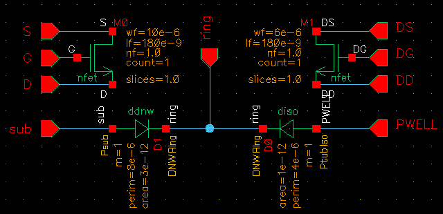
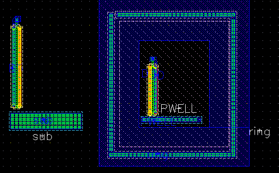

DESCRIPTION :
'ddnw' and 'diso' implement the deep nwell "Triple Well" connectivity
by
providing a three terminal model of the isolated pwell, the nwell ring,
and the bulk psubstrate. No layout view is provided at this time to
generate the deep nwell ring structure.
ATTRIBUTES:
- Calculate Parameter: Calculate area, width, or length
- Area: Area of the inner isolated pwell island.
- Width: Width of the inner isolated pwell island.
- Length: Length of the inner isolated pwell island.
- Perimeter: Perimeter of the inner isolated pwell island.
NOTES:
Connectivity for this device are best explained by example.
Here is a sample schematic and layout showing how the pins and
connectivity is defined:


LVS:
- The following attributes are checked during LVS : connectivity.
- An LVS runtime flag 'CompareDnwDiode' can be used to enable
verification of area/perimeter of the ddnw and diso diodes.